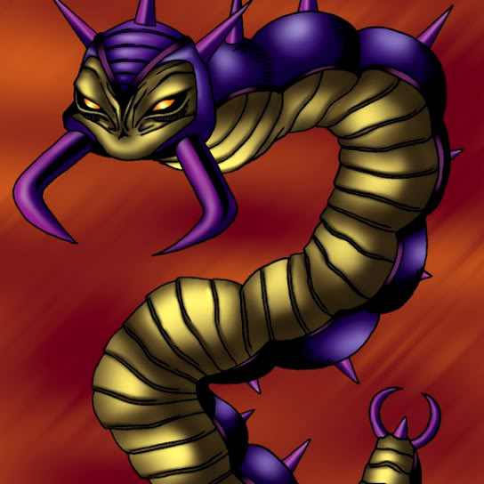

Leghul

Description: "Teleports to opponent's Summoning Area when this card is flipped face-up. When this card is flipped face-up in battle, the battle to be engaged is cancelled."
STATS
ATK: 300
DEF: 350DECK COST
Deck Cost per Card: 12EFFECT NOT IMPLEMENTED
Fusion List (3 Possible Fusions)
- Leghul + M-Warrior #2 = Cockroach Knight
- Leghul + Queen's Double = Cockroach Knight
- Leghul + Swordsman from a Foreign Land = Cockroach Knight